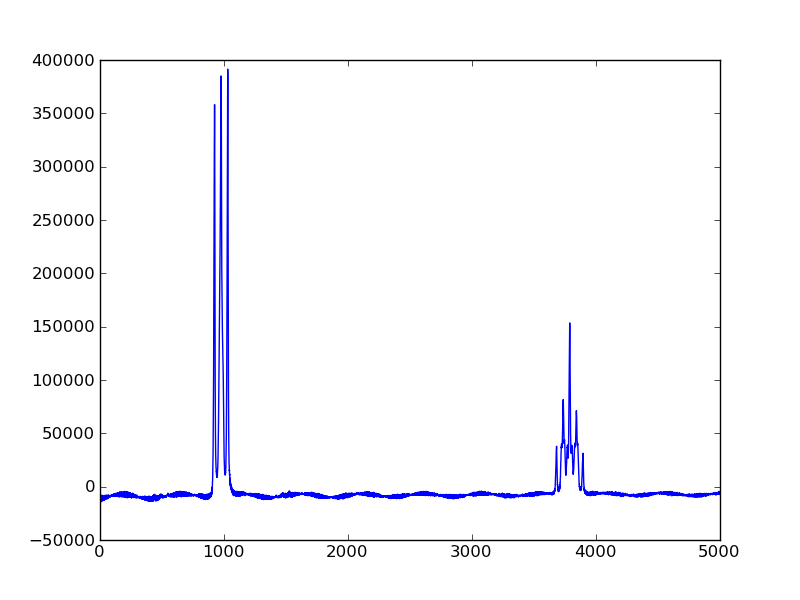
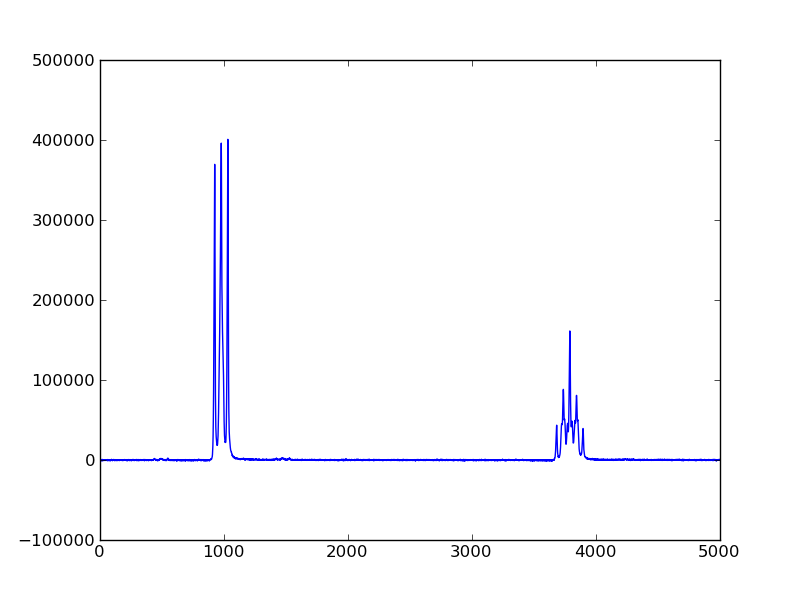

This example shows how nmrglue can be used to process and display one dimensional Bruker data.
Raw Bruker data from modern spectrometers contains a group delay artifact which must be removed during processing. There has been much speculation as to the origins of this artifact and many methods for removing the artifact have been suggested [1], [2], [3], [4], [5].
Nmrglue provides an algorithm for removing this artifact based on the protocol presented in “DMX DIGITAL FILTERS AND NON-BRUKER OFFLINE PROCESSING III” by W. M. Westler and F. Abildgaard. This method is available for use through nmrglue.fileio.bruker.remove_digital_filter(). Nmrglue users can use this included function to remove the artifact or implement their own method if they are unsatisfied with the results.
In this example a 1D NMR spectrum of 1,3 diaminopropane is processed and plotted using nmrglue. The results can be compared with the spectrum produced from NMRPipe which provides a different artifact removal algorithm. Note that no apodization or baseline corrections are performed on these spectra.
process_and_plot_nmrglue.py [source code]
#! /usr/bin/env python
import nmrglue as ng
import matplotlib.pyplot as plt
# read in the bruker formatted data
dic, data = ng.bruker.read('expnmr_00001_1')
# remove the digital filter
data = ng.bruker.remove_digital_filter(dic, data)
# process the spectrum
data = ng.proc_base.zf_size(data, 32768) # zero fill to 32768 points
data = ng.proc_base.fft(data) # Fourier transform
data = ng.proc_base.ps(data, p0=-88.0) # phase correction
data = ng.proc_base.di(data) # discard the imaginaries
data = ng.proc_base.rev(data) # reverse the data
fig = plt.figure()
ax = fig.add_subplot(111)
ax.plot(data[20000:25000])
fig.savefig('figure_nmrglue.png')
Output:
nmrpipe_proc.com [source code]
#!/bin/csh
bruk2pipe -in ./expnmr_00001_1/fid \
-bad 0.0 -noaswap -DMX -decim 32 -dspfvs 12 -grpdly 0 \
-xN 32768 \
-xT 16384 \
-xMODE DQD \
-xSW 4807.692 \
-xOBS 400.132 \
-xCAR 4.697 \
-xLAB 1H \
-ndim 1 \
-out ./test.fid -verb -ov
nmrPipe -in test.fid \
| nmrPipe -fn ZF -auto \
| nmrPipe -fn FT \
| nmrPipe -fn PS -p0 -22.0 -p1 0.0 -di \
-out test.ft2 -verb -ov
plot_nmrpipe.py [source code]
#! /usr/bin/env python
import nmrglue as ng
import matplotlib.pyplot as plt
# read in the data
dic, data = ng.pipe.read('test.ft2')
# plot the spectrum
fig = plt.figure()
ax = fig.add_subplot(111)
ax.plot(data[20000:25000])
fig.savefig('figure_nmrpipe.png')
Output:
{kind=link}
{kind=link}